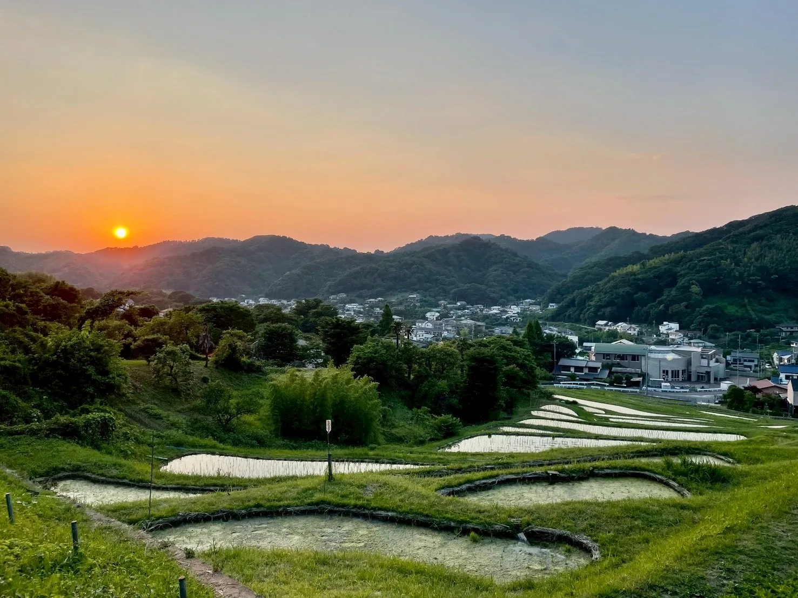
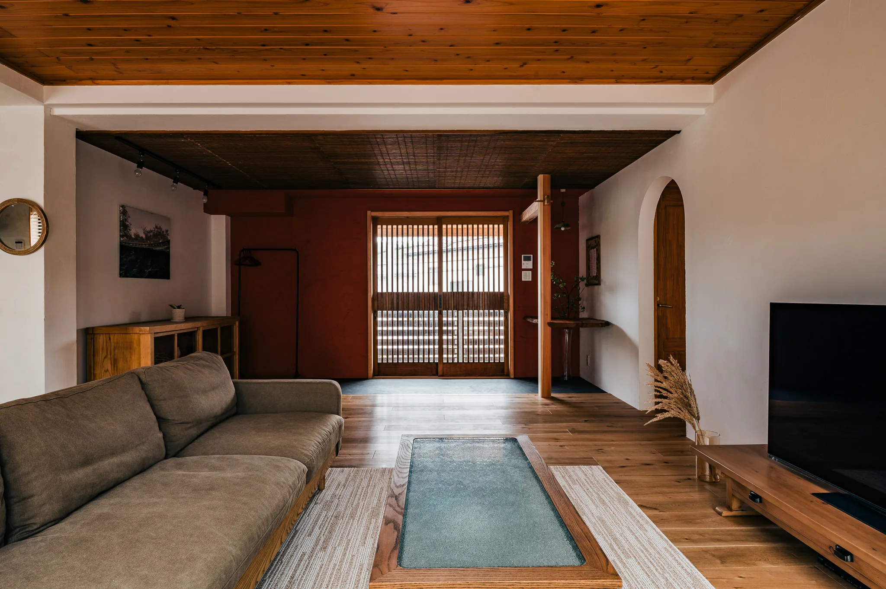
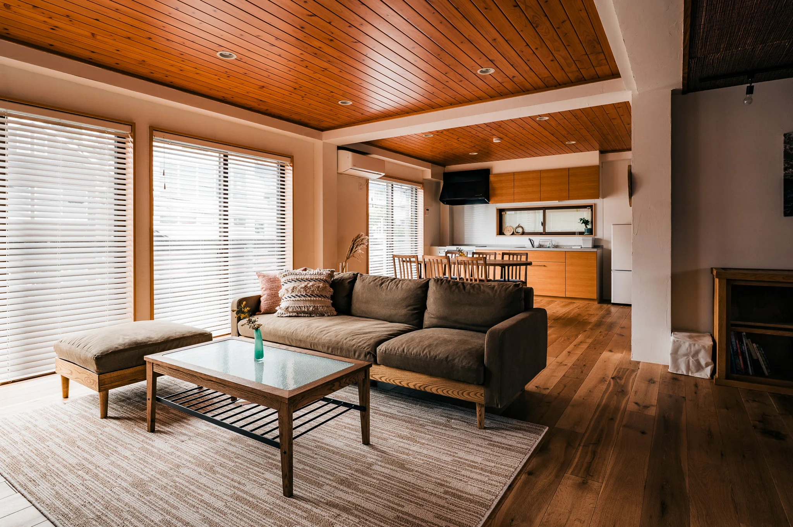
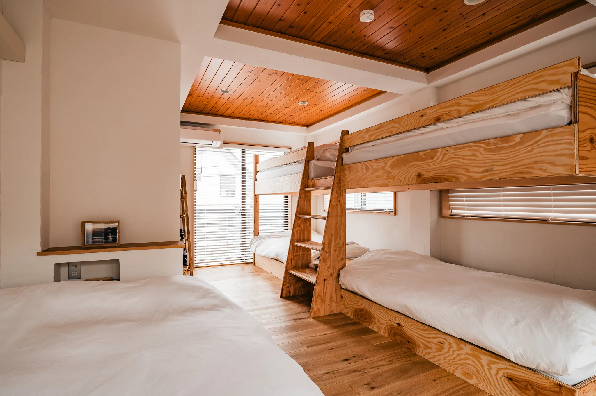
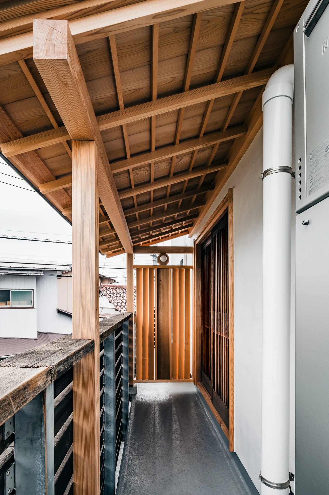
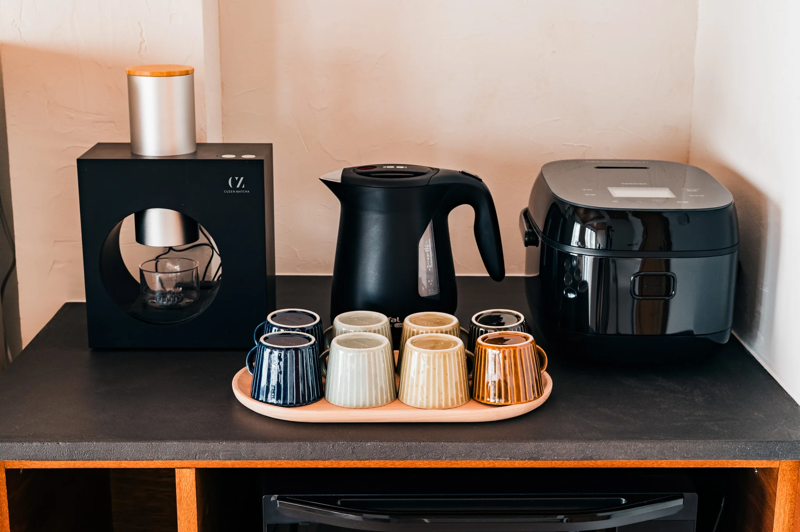

01
棚田を見て、味わう
葉山の棚田で育てたお米が、葉山アイスのアイスクリームに変わる。風景を「食べる」体験を、滞在中に。




Concept
TERRAは、葉山への愛から生まれました。
海越しに望む富士山、
棚田が広がる里山。
この土地に暮らして十年、
私たちは今もなお、
この町の風景に魅了され続けています。
風景とはきっと、
人の営みと自然がゆっくりと重なり合い、
時間をかけて育まれてきたもの。
ここでは、訪れる人と葉山との距離が、
ゆっくりとほどけていきます。
海と山が織りなす自然のリズム、
ここに息づく人々の物語。
The House
一軒家の二階を、まるごと貸し切り。




← スクロールで巡る →
More about rooms →
01
葉山の棚田で育てたお米が、葉山アイスのアイスクリームに変わる。風景を「食べる」体験を、滞在中に。

02
一色海岸まで徒歩8分。澄んだ空気の晴れた日は、海の向こうに富士山。※写真は素材待ち（仮）
03
漁港から朝の魚、畑から旬の野菜。地元の食材で、自分たちの食卓を整える喜び。※写真は素材待ち（仮）

04
京都生まれの抹茶マシーンを、宿のキッチンに。挽きたての一服を、いつでも手元に。
海まで、徒歩8分。

Owner
棚田で育てたお米から、手づくりのアイスを。
TERRA を営むのは、葉山に根を張る BEAT ICE。
アイスづくり、地域の学校給食への提供、子どもたちと汗を流す田んぼでの米づくり。
More about us →Reservation
空き状況の確認・ご予約は Airbnb から。
Airbnbで予約する →